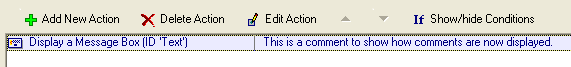
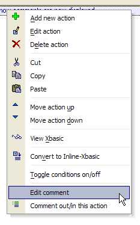
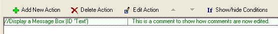

Action Commenting
In the Action Scripting Editor you may add, delete, and edit comments attached to your action scripts. When you select an action, it is highlighted with light purple.

You may edit an action's comment by right clicking and selecting Edit Comment.

Alpha Five Version 6 now allows you to comment-out and comment-in actions. The result is that is much easier to test variants of your scripts without deleting actions that may want to use. The Comment in and Comment out commands are available on the right click menu. The following image shows how a commented-out action appears.
